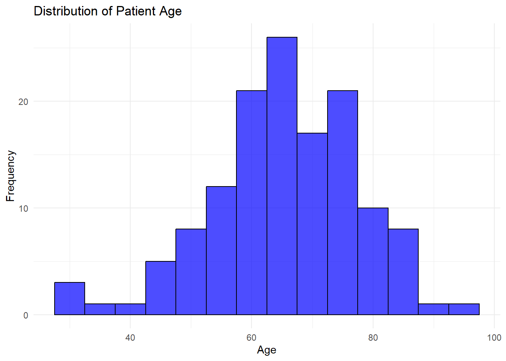
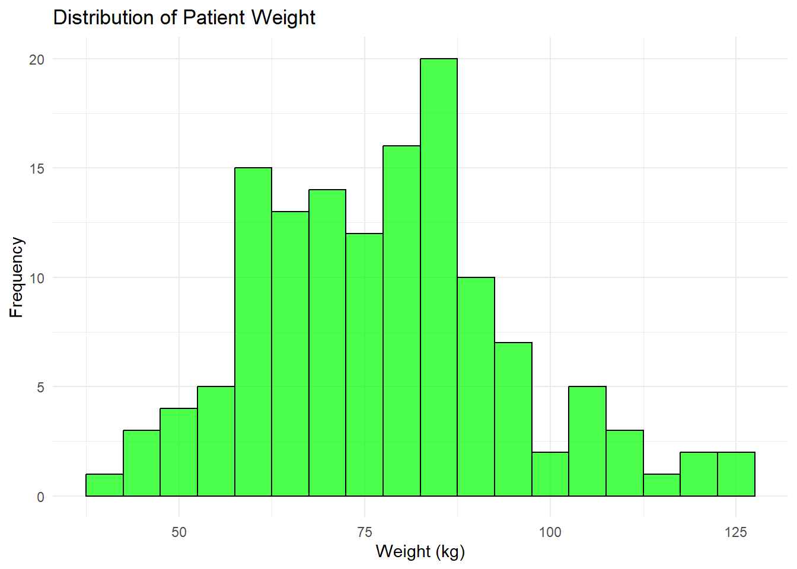
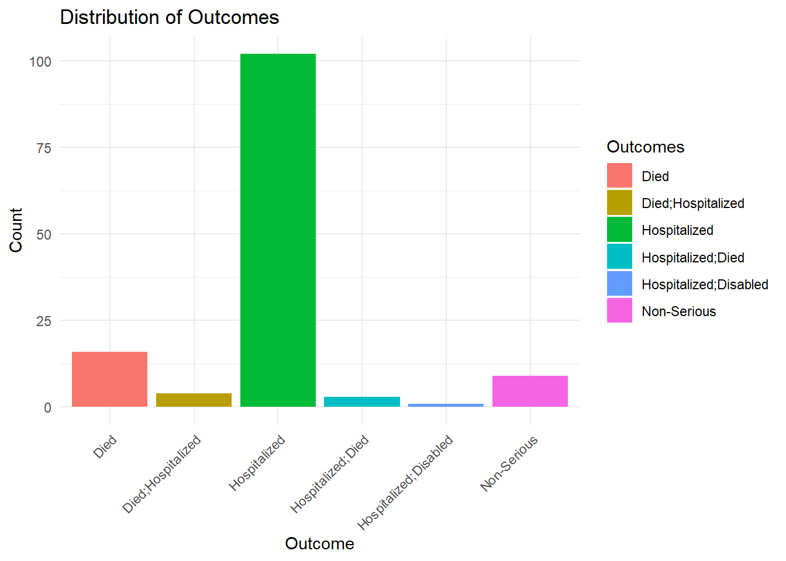
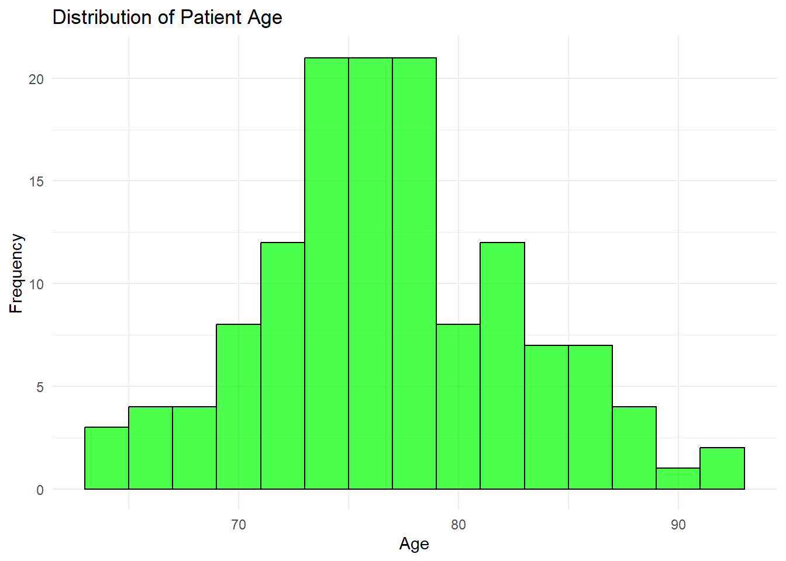
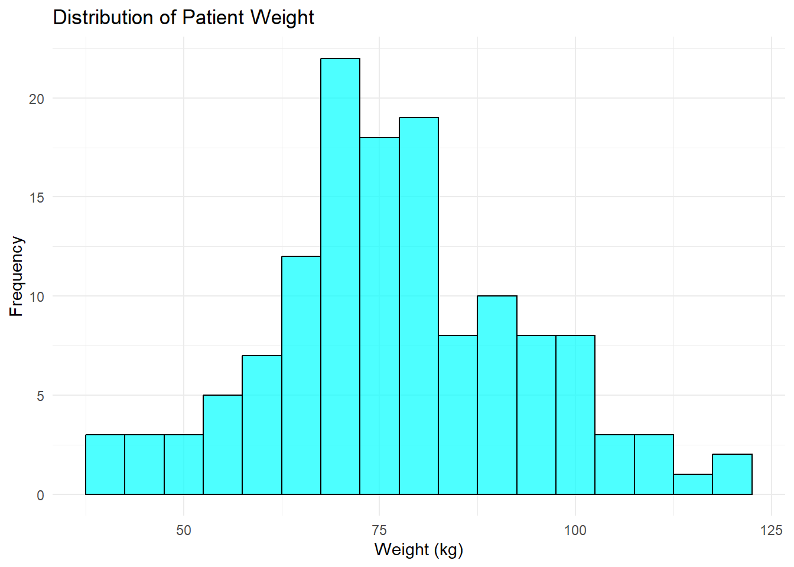
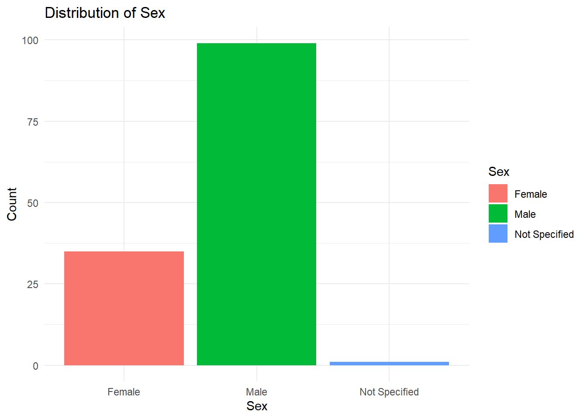

The FDA Adverse Event Reporting System (FAERS) is a publicly available database maintained by the U.S. Food and Drug Administration (FDA). It contains adverse event reports, medication error reports, and product quality complaints submitted by healthcare professionals, manufacturers, and consumers. This data is used for post market surveillance of drug safety.
1.2 Source of Data
The dataset is obtained from FAERS, which collects reports on suspected adverse drug reactions. The official FAERS database can be accessed at the FDA’s website:
The uploaded FAERS dataset consists of 21 columns that provide detailed information about adverse drug reactions, including:
Case ID: Unique identifier for each reported case.
Suspect Product Names: Drugs suspected to have caused an adverse event.
Suspect Product Active Ingredients: Active pharmaceutical ingredients in the reported drugs.
Reason for Use: The medical condition(s) for which the drug was prescribed.
Reactions: Reported adverse events.
Serious: Whether the adverse event is classified as serious.
Outcomes: The final outcome of the reported event (e.g., hospitalization, death).
Sex: Gender of the patient.
Event Date: When the adverse event was reported.
Patient Age & Weight: Demographics of the affected individual.
Reporter Type: Whether the report was submitted by a healthcare professional or a consumer.
Concomitant Product Names: Other drugs the patient was taking at the same time.
Country where Event Occurred: Location of the reported adverse event.
Dates of FDA and Manufacturer Report Receipt: Timeline of when the report was processed.
This dataset is valuable for analyzing post-market drug safety, identifying trends in adverse events, and informing regulatory actions.
2 Data Loading and Cleaning**
# Define the file pathfile_path <-here("cdcdata-exercise","data.csv")# Function to load and clean dataload_and_clean_data <-function(file_path) { data <-read_csv(file_path, show_col_types =FALSE) %>%select("Suspect Product Active Ingredients", "Reason for Use", "Sex", "Patient Age", "Patient Weight", "Outcomes", "Reactions") %>%# Keep only rows where 'Suspect Product Active Ingredients' contains 'Venetoclax'filter(str_detect(`Suspect Product Active Ingredients`, "Venetoclax")) %>%# Keep only rows where 'Reason for Use' is 'Chronic Lymphocytic Leukaemia'filter(`Reason for Use`=="Chronic Lymphocytic Leukaemia") %>%# Convert 'Patient Age' to numeric, removing 'YR' and filtering out 'Not Specified'mutate(`Patient Age`=na_if(`Patient Age`, "Not Specified")) %>%mutate(`Patient Age`=as.numeric(gsub(" YR", "", `Patient Age`))) %>%filter(!is.na(`Patient Age`)) %>%# Keep only single-word outcomes in 'Outcomes'filter(str_count(`Outcomes`, " ") ==0) %>%# Keep only single-word reactions in 'Reactions'mutate(`Reactions`=na_if(`Reactions`, "Not Specified")) %>%filter(str_count(`Reactions`, " ") ==0) %>%# Convert 'Patient Weight' to numeric, removing 'KG' and filtering out 'Not Specified'mutate(`Patient Weight`=na_if(`Patient Weight`, "Not Specified")) %>%mutate(`Patient Weight`=as.numeric(gsub(" KG", "", `Patient Weight`))) %>%filter(!is.na(`Patient Weight`))return(data)}# Load and clean the datadata <-load_and_clean_data(file_path)
Warning: There was 1 warning in `mutate()`.
ℹ In argument: `Patient Age = as.numeric(gsub(" YR", "", `Patient Age`))`.
Caused by warning:
! NAs introduced by coercion
# Check the structure and summary of the cleaned dataset# Overview of the dataset structurestr(data)
Suspect Product Active Ingredients Reason for Use Sex
Length:135 Length:135 Length:135
Class :character Class :character Class :character
Mode :character Mode :character Mode :character
Patient Age Patient Weight Outcomes Reactions
Min. :30.00 Min. : 42.22 Length:135 Length:135
1st Qu.:58.00 1st Qu.: 65.00 Class :character Class :character
Median :66.00 Median : 77.60 Mode :character Mode :character
Mean :65.41 Mean : 77.58
3rd Qu.:73.50 3rd Qu.: 87.00
Max. :94.00 Max. :125.00
ggplot(data, aes(x =`Patient Age`)) +geom_histogram(binwidth =5, fill ="blue", color ="black", alpha =0.7) +labs(title ="Distribution of Patient Age", x ="Age", y ="Frequency") +theme_minimal()

3.2 Distribution of Patient Weight
ggplot(data, aes(x =`Patient Weight`)) +geom_histogram(binwidth =5, fill ="green", color ="black", alpha =0.7) +labs(title ="Distribution of Patient Weight", x ="Weight (kg)", y ="Frequency") +theme_minimal()

3.3 Percentage distribution of Sex
sex_distribution <- data %>%count(Sex) %>%mutate(Percentage =round(n /sum(n) *100, 2))print("Percentage Distribution of Sex:")
[1] "Percentage Distribution of Sex:"
print(sex_distribution)
# A tibble: 3 × 3
Sex n Percentage
<chr> <int> <dbl>
1 Female 36 26.7
2 Male 98 72.6
3 Not Specified 1 0.74
3.4 Bar plot for Sex distribution
ggplot(data, aes(x = Sex, fill = Sex)) +geom_bar() +labs(title ="Distribution of Sex", x ="Sex", y ="Count") +theme_minimal()
3.5 Frequency Table for Top 5 Adverse Reactions
reaction_counts <- data %>%count(Reactions, name ="Frequency") %>%arrange(desc(Frequency)) %>%top_n(5, wt = Frequency)print("Top 5 Most Frequent Adverse Reactions:")
[1] "Top 5 Most Frequent Adverse Reactions:"
print(reaction_counts)
# A tibble: 5 × 2
Reactions Frequency
<chr> <int>
1 Covid-19 18
2 Pneumonia 10
3 Death 7
4 Infection 4
5 Influenza 4
3.6 Percentage distribution of Outcomes
outcome_distribution <- data %>%count(Outcomes) %>%mutate(Percentage =round(n /sum(n) *100, 2))print("Percentage Distribution of Outcomes:")
ggplot(data, aes(x = Outcomes, fill = Outcomes)) +geom_bar() +labs(title ="Distribution of Outcomes", x ="Outcome", y ="Count") +theme_minimal() +theme(axis.text.x =element_text(angle =45, hjust =1))

4 This portion is contributed by PRASANGA PAUDEL
Adding required packages
library(purrr) #used during data generation
4.1 Data Generation
4.1.1 Setting the seeds and observation number
In this section we will create the baseline for generating our synthetic data. We will set the seed so that we can create reproducible data, and we will also set the number of observations to 135 as in the original dataset above.
# Setting a seed for reproducibility of dataset.seed(100) # we will also set seed individually# Definining the number of observations (patients) to generateobs <-135
4.1.2 Creating an empty Dataset
We will then create an empty dataset with just variable names and their data structure. We will make sure that every variable has the same number of obserations i.e 135.
# Create an empty data frame with placeholders for variablessynthetic <-data.frame(Weight =numeric(obs),#patient's weightAge =numeric(obs), #patient's ageSex =character(obs), #patient's sexReaction =character(obs), #reported adverse eventsOutcome =character(obs), # final outcome of reported eventsactiveIngredient =character(obs),Reason =character(obs) #reason for use)
4.2 Data Formation
Next, we will create the synthetic the data required for our excercise. We will try to control how the data is formed while we generate these data. All the variables will be generated with as per the information obtained from the table and figures above.
We will also make sure that the variables contain mostly similar data when generated synthetically.
# Variable 1: Weight (represents the weight of the patient)synthetic$Weight <-round(rnorm(obs, mean =77.58, sd =17.27))synthetic$Weight <-pmax(42.22, pmin(synthetic$Weight, 125.00))# Variable 2: Age of the patientset.seed(100) #setting an individual seed for ageadjusted_sd <- (88-77.6) /1.75# we observe that the tails dont have enough observations so we plan our data generation accordinglysynthetic$Age <-round(rnorm(obs, mean =77.6, sd = adjusted_sd))synthetic$Age <-pmax(30, pmin(synthetic$Age, 94)) # setting max and min# Variable 3: Gender/Sex of the playerset.seed(123) #setting an individual seed for ageprob_female <-0.2667# 26.67%prob_male <-0.7259# 72.59%prob_not_specified <-0.0074# 0.74%synthetic$Sex <-sample(c("Male", "Female", "Not Specified"),size = obs,replace =TRUE,prob =c(prob_male, prob_female, prob_not_specified) # setting probability same as original)# Define the reaction and frequency vectorsreaction <-c("Covid-19", "Pneumonia", "Death", "Infection", "Influenza", "Abscess", "Appendicitis;Appendicectomy", "Arrhythmia", "Ascites", "Asthma", "Bradycardia", "Bronchitis", "Bronchitis;Infection", "Cholecystitis;Gastritis;Cholecystectomy", "Constipation", "Cough", "Covid-19;Sepsis", "Death;Thrombocytopenia", "Dehydration", "Dehydration;Colitis;Diarrhoea", "Diarrhoea", "Diarrhoea;Fatigue", "Dizziness;Vertigo", "Dysphagia", "Dyspnoea;Death", "Dysuria;Pyrexia", "Encephalitis", "Encephalopathy", "Encephalopathy;Pyrexia", "Epididymitis", "Epilepsy", "Erythema;Dermatitis", "Fall;Malaise", "Fatigue", "Fatigue;Diarrhoea;Nausea;Gastroenteritis;Headache;Malaise;Cryptococcosis;Pyrexia", "Fatigue;Nausea;Malnutrition;Hypophagia", "Giardiasis", "Gout", "Haemarthrosis", "Haemorrhage", "Hepatotoxicity", "Hypercreatinaemia", "Hyperglycaemia", "Hyperkalaemia", "Hyperkalaemia;Hyperphosphataemia", "Hyperphosphataemia", "Hypertension", "Hypotension", "Hypotension;Vomiting;Nausea", "Insomnia;Hypothermia;Pain", "Ischaemia;Infarction", "Neutropenia;Pericarditis", "Neutropenia;Pyrexia;Gastroenteritis", "Oedema;Paraesthesia", "Osteomyelitis;Pain", "Pancreatitis", "Pancreatitis;Pneumonia", "Pancytopenia", "Papilloedema", "Pericarditis", "Pharyngitis", "Pneumonia;Covid-19", "Pneumonia;Fatigue;Covid-19", "Pneumonia;Influenza", "Pneumonia;Pancreatitis", "Pneumonia;Pyrexia;Dyspnoea;Pneumonitis", "Pneumonitis", "Pneumonitis;Bacteraemia;Sepsis", "Pollakiuria", "Pruritus;Rash", "Pyrexia", "Pyrexia;Dysphagia", "Pyrexia;Influenza", "Rash", "Seizure", "Sepsis;Bacteraemia;Pneumonitis", "Sepsis;Cholelithiasis", "Sinusitis", "Splenomegaly;Lymphadenopathy;Infection;Cough;Lymphadenitis;Neutropenia", "Syncope", "Tachyarrhythmia", "Thrombocytopenia", "Thrombocytopenia;Leukopenia", "Vomiting")freq <-c(18, 10, 7, 4, 4, 3, 3, 3, 3, 3, 0, 1, 1, 1, 1, 1, 1, 1, 1, 1, 1, 0, 1, 1, 1, 1, 1, 1, 0, 1, 1, 1, 1, 1, 1, 1, 1, 1, 1, 1, 1, 1, 1, 1, 1, 1, 1, 1, 1, 1, 1, 1, 1, 1, 1, 1, 1, 1, 1, 1, 1, 1, 1, 1, 1, 1, 1, 1, 1, 1, 1, 1, 1, 1, 1, 1, 1, 1, 1, 1,1, 1, 3, 4)# Create the Reaction variable as a vectorReaction <-unlist(mapply(rep, reaction, freq))# Variable 5: Outcomesoutcomes <-c("Died", "Died;Hospitalized", "Hospitalized", "Hospitalized;Died", "Hospitalized;Disabled", "Non-Serious")percentages <-c(11.8, 2.96, 75.6, 2.22, 0.74, 6.67) # setting probability same as originalprobabilities <- percentages /100synthetic$Outcome <-sample(outcomes, size =nrow(synthetic), replace =TRUE, prob = probabilities)# Variable 6: Active Ingredientsynthetic$activeIngredient <- purrr::map_chr(sample(c("Ibrutinib;Obinutuzumab;Venetoclax","Ibrutinib;Prednisolone;Vincristine;Rituximab;Cyclophosphamide;Venetoclax;Doxorubicin Hydrochloride","Ibrutinib;Rituximab;Prednisolone;Cyclophosphamide;Doxorubicin Hydrochloride;Venetoclax;Vincristine Sulfate","Ibrutinib;Venetoclax","Ibrutinib;Venetoclax;Obinutuzumab","Obinutuzumab;Ibrutinib;Venetoclax","Obinutuzumab;Venetoclax","Obinutuzumab;Venetoclax;Bendamustine","Obinutuzumab;Venetoclax;Ibrutinib","Rituximab;Venetoclax","Ublituximab;Venetoclax;Umbralisib","Venetoclax","Venetoclax;Bendamustine;Obinutuzumab","Venetoclax;Ibrutinib","Venetoclax;Ibrutinib;Obinutuzumab","Venetoclax;Losartan Potassium","Venetoclax;Obinutuzumab","Venetoclax;Obinutuzumab;Ibrutinib","Venetoclax;Rituximab"), obs, replace =TRUE), as.character)#Variable 7 : Reasonsynthetic$Reason <- purrr::map_chr(sample(c("Chronic Lymphocytic Leukaemia"), obs, replace =TRUE), as.character) # all observation had this same value.
4.3 Visualizing the Synthetic data
Now we will visualize the synthetic data following the simillar methodologies by the original author.
4.3.1 Distribution of Patient Age
ggplot(synthetic, aes(x = Age)) +geom_histogram(binwidth =2, fill ="green", color ="black", alpha =0.7) +labs(title ="Distribution of Patient Age", x ="Age", y ="Frequency") +theme_minimal()

The distribution looks somewhat simillar to the original data for Age
4.3.2 Distribution of Patient Weight
ggplot(synthetic, aes(x = Weight)) +geom_histogram(binwidth =5, fill ="cyan", color ="black", alpha =0.7) +labs(title ="Distribution of Patient Weight", x ="Weight (kg)", y ="Frequency") +theme_minimal()

The distribution looks somewhat simillar to the original distribution of Weight.
4.3.3 Percentage distribution of Sex
sex_distribution <- synthetic %>%count(Sex) %>%mutate(Percentage =round(n /sum(n) *100, 2))print("Percentage Distribution of Sex:")
[1] "Percentage Distribution of Sex:"
print(sex_distribution)
Sex n Percentage
1 Female 35 25.93
2 Male 99 73.33
3 Not Specified 1 0.74
The distribution of Sex has been set similar to original distribution because we knew the actual frequencies.
ggplot(synthetic, aes(x = Sex, fill = Sex)) +geom_bar() +labs(title ="Distribution of Sex", x ="Sex", y ="Count") +theme_minimal()

The similarity in dataset can be verified by the histogram as well.
4.3.4 Frequency Table for Top 5 Adverse Reactions
I tried multiple times but could not assign the frequencies properly for the values as there we 84 different values.
# Tabulate the variable Reaction and arrange by descending frequencyreaction_counts <- synthetic %>%count(Reaction) %>%# Count occurrences of each reactionarrange(desc(n)) # Arrange by descending frequency# Print the top 5 most frequent adverse reactionsprint("Top 5 Most Frequent Adverse Reactions:")
[1] "Top 5 Most Frequent Adverse Reactions:"
print(head(reaction_counts, 5)) # Display the top 5 reactions
Reaction n
1 135
4.3.5 Percentage distribution of Outcomes
outcome_distribution <- synthetic %>%count(Outcome) %>%mutate(Percentage =round(n /sum(n) *100, 2))print("Percentage Distribution of Outcomes:")